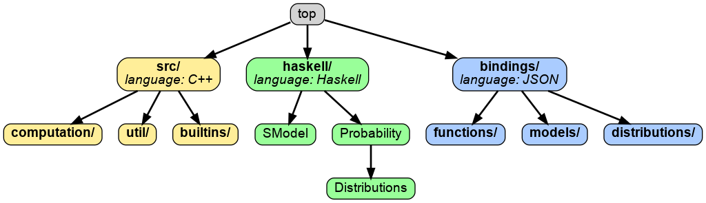

In order to add functionality to BAli-Phy, it is important to understand the BAli-Phy architecture. This architecture is divided into several levels.
In BAli-Phy, distributions, functions, and models are all implemented as functions. To add functionality to the standard BAli-Phy interface, you need to add a Haskell function (green), and a binding (blue) that makes that function visible. BAli-Phy does not use a standard Haskell compiler, but instead implements its own Haskell interpreter that has special functionality.
If you are using the generic graphical modeling language, you can use the Haskell function directly, and do not need to add a binding.
In some cases you might want to implement your function in C++ (yellow) and then call it from Haskell.
These directories contain code that affects how bali-phy runs:
